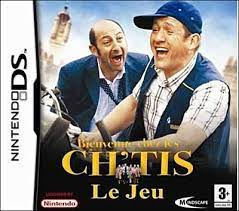

|
Bienvenue Chez Les Ch'tis sur DS reprend l'univers du film à succès de Dany Boon. Retrouvez les lieux et personnages emblématiques du long-métrage et faites face à de nombreuses épreuves loufoques. |
|
Bienvenue Chez Les Ch'tis sur DS reprend l'univers du
film à succès de Dany Boon. Retrouvez les lieux et
personnages emblématiques du long-métrage
et faites face à de nombreuses épreuves loufoques.
|
© Developer: Mad Monkey Studio / Publisher: Mindscape / Platform: DS / Genre: Party / Release EU: October 31, 2008
Retour en haut de la page